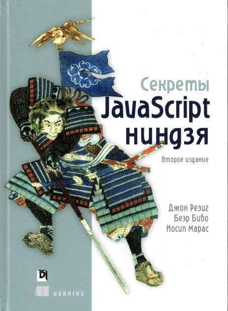
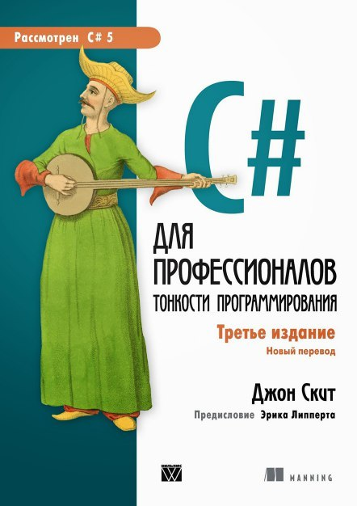

#Python
Прикладной анализ текстовых данных на Python
ISBN: 39323146
Авторы: Бенджамин Бенгфорт, Ребекка Билбро, Тони Охеда
Количество страниц: 368
Год издания: 2017
Описание:
Научитесь применять методы машинного обучения для анализа текста в реальных задачах, используя возможности и библиотеки Python. От поиска модели и предварительной обработки данных вы перейдёте к приёмам классификации и кластеризации текстов, затем приступите к визуальной интерпретации, анализу графов, а после знакомства с приёмами масштабирования научитесь использовать глубокое обучение для анализа текста.
Основные темы:
— Естественные языки и вычисления;
— Создание собственного корпуса, его предварительная подготовка;
— Классификация в текстовом анализе;
— Кластеризация для выявления сходств в тексте;
— Визуализация текста;
— Чат-боты.
#Other
Программист-прагматик. Путь от подмастерья к мастеру
ISBN: 90707149
Авторы: Э. Хант, Д. Томас
Количество страниц: 370
Год издания: 2009
Описание:
Находясь на переднем крае программирования, эта книга абстрагируется от всевозрастающей специализации и технических тонкостей разработки программ на современном уровне, чтобы исследовать суть процесса — требования к работоспособной и поддерживаемой программе, приводящей пользователей в восторг. Книга охватывает различные темы — от личной ответственности и карьерного роста до архитектурных методик, придающих программам гибкость и простоту в адаптации и повторном использовании.
Основные темы:
— Борьба с недостатками ПО;
— Избегание ловушек, связанных с дублированием;
— Создание гибких, динамичных и адаптируемых программ;
— Защита своих программ при помощи контрактов, утверждений и исключений;
— Осуществление безжалостного и эффективного тестирования;
#Java
Структуры данных и алгоритмы Java
ISBN: 81200622
Авторы: Роберт Лафоре
Количество страниц: 703
Год издания: 2013
Описание:
Второе издание одной из самых авторитетных книг по программированию посвящено использованию структур данных и алгоритмов. Первая часть книги представляет собой введение в алгоритмизацию и структуры данных, а также содержит изложение основ объектно-ориентированного программирования. Следующие части посвящены различным алгоритмам и структурам данных, рассматриваемым от простого к сложному: сортировка, абстрактные типы данных, связанные списки, рекурсия, древовидные структуры данных, хеширование, пирамиды, графы.
#Python
Python. Экспресс-курс
ISBN: 54356317
Авторы: Наоми Седер
Количество страниц: 480
Год издания: 2019
Описание:
С помощью этой книги вы можете быстро перейти от основ к управлению и структурам данных, чтобы создавать, тестировать и развертывать полноценные приложения. Наоми Седер рассказывает не только об основных особенностях языка Python, но и его объектно-ориентированных возможностях, которые появились в Python 3. Данное издание учитывает все изменения, которые произошли с языком за последние 5 лет, а последние 5 глав рассказывают о работе с большими данными.
Основные темы:
— первые шаги;
— списки, кортежи, множества;
— функции и модули;
— работа с файлами;
— расширенные возможности языка;
— работа с данными.
#Other
Первые 20 часов. Как быстро научиться... чему угодно
ISBN: 73940755
Авторы: Джош Кауфман
Количество страниц: 384
Год издания: 2019
Описание:
Автор книги, Джош Кауфман, утверждает, что за 20 часов правильно организованных занятий можно научиться любому делу. Лучшее доказательство тому — он сам. Самоучка, не получивший классического бизнес-образования, Джош — успешный предприниматель, выдающийся бизнес-тренер, основатель и руководитель интернет-проекта PersonalMBA.com Эта книга описывает системный подход к приобретению новых навыков настолько быстро, насколько это возможно. Предлагаемый метод универсален.
#JavaScript
Секреты JavaScript ниндзя
ISBN: 47853137
Авторы: Рейзиг Джон, Бибо Бэер
Количество страниц: 207
Год издания: 2016
Описание:
Во втором издании данной книги на многих практических примерах ясно демонстрируется каждое основное понятие или методика. Это издание было полностью переработано с целью показать, как овладеть такими понятиями JavaScript, как функции, замыкания, объекты, прототипы и обещания. В нем рассматриваются и такие понятия, как модель DOM, события и таймеры, а также нормы передовой практики программирования, в том числе тестирование и разработка кросс-браузерного кода.
#Other
Linux глазами хакера
ISBN: 45195315
Авторы: Михаил Фленов
Количество страниц: 418
Год издания: 2019
Описание:
В данной книге рассмотрены вопросы настройки ОС Linux на максимальную производительность и безопасность. Описано базовое администрирование и управление доступом, настройка Firewall, файлообменный сервер, WEB-, FTP- и Proxy-сервера, программы для доставки электронной почты, службы DNS, а также политика мониторинга системы и архивирование данных. Перечислены потенциальные уязвимости, даны рекомендации по предотвращению возможных атак и показано, как действовать при атаке или взломе системы, чтобы максимально быстро восстановить её работоспособность и предотвратить потерю данных.
Основные темы:
— безопасность Linux;
— оптимизация ОС и сервисов;
— атаки хакеров на Linux;
— защита сервера от атак хакеров;
— примеры для CentOS и Ubuntu;
#Web
PHP. Рецепты программирования
ISBN: 73396809
Авторы: Дэвид Скляр, Адам Трахтенберг
Количество страниц: 785
Год издания: 2016
Описание:
Третье издание популярной книги представляет собой подборку решений наиболее распространённых задач на языке PНP. Изложен материал, интересный каждому разработчику: базовые типы данных, операции с ними, файлы cookie, функции PНP, аутентификация пользователей, работа со слоями, проблемы безопасности, ускорение действия программ, работа в сети, создание графических изображений, обработка ошибок, отладка сценариев и написание тестов. Даны рецепты, затрагивающие основы объектно-ориентированного программирования и новые функциональные возможности РНР
#CPP
C# для профессионалов. Тонкости программирования
ISBN: 37504447
Авторы: Джон Скит
Количество страниц: 598
Год издания: 2019
Описание:
Цель книги — раскрытие новых средств языка C# 5, включая решение проблем, которые связаны с написанием сопровождаемого асинхронного кода.
Основные темы:
— Язык C# как основа всех основ;
— Революционные изменения в доступе к данным;
— Лямбда-выражения и деревья выражений;
— Асинхронность с помощью async/await и многое другое.
#CPP
Изучаем C++ через программирование игр
ISBN: 52422566
Авторы: Майкл Доусон
Количество страниц: 353
Год издания: 2016
Описание:
Если вы хотите научиться программировать первоклассные игры, вам просто необходимо изучить язык С++. Гораздо интересней учиться, когда обучение превращается в игру. Каждая глава книги описывает самостоятельный игровой проект. В заключительной главе вам предстоит написать сложную игру, которая объединяет все приемы программирования, рассмотренные в предыдущих главах.
Основные темы:
— Переменные, типы, ввод;
— Ветвление и циклы;
— Функции и библиотека стандартных шаблонов;
— Классы и ООП.